Composing System Prompts
Composing System Prompts

Alt text: CUNY AI Lab
Led by Zach Muhlbauer
New Media Lab · Room 7388.01
CUNY Graduate Center
Workshop Roadmap
Workshop Agenda
Introductions
What is your name, pronouns, and role at CUNY?
What brings you to this workshop today?
Sandbox Access
Request Access
- Open access application. Choose My own access and sign in with CUNY Login.
- Enter your details and intended use, complete verification, and select Submit Application.
- Watch your verified CUNY email for approval.
Sign In
Already approved? Open Sandbox.
- Select Continue with CUNY Login and enter your CUNY credentials.
- Complete two-factor authentication if prompted.
System Prompts
Chat Features
Select Models
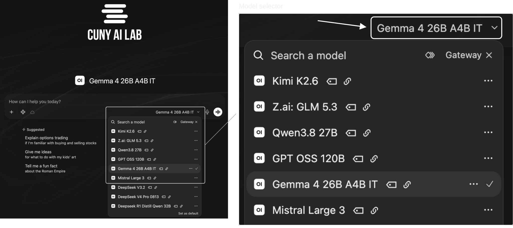
Alt text: Sandbox logo, message box, and Gateway model selector; enlarged detail shows current model choices with model ID outlined and marked by an arrow.
Compare Models
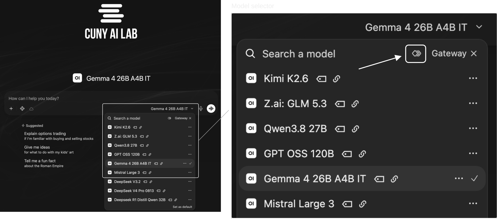
Alt text: Sandbox logo, message box, and Gateway model selector; enlarged detail shows Compare beside search field outlined and marked by an arrow.
Who Was Late?
Winograd Schema Challenge
Compare Outputs
Gemma vs. Qwen
Gemma’s Response
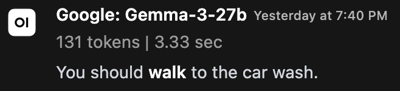
Alt text: Gemma 3 27B response recommending walking, with model name and generation time.
Qwen’s Response
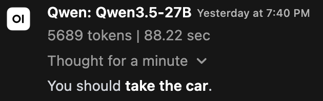
Alt text: Qwen3.5 27B response recommending driving, with model name and generation time.
Going to the Car Wash
Add System Prompt
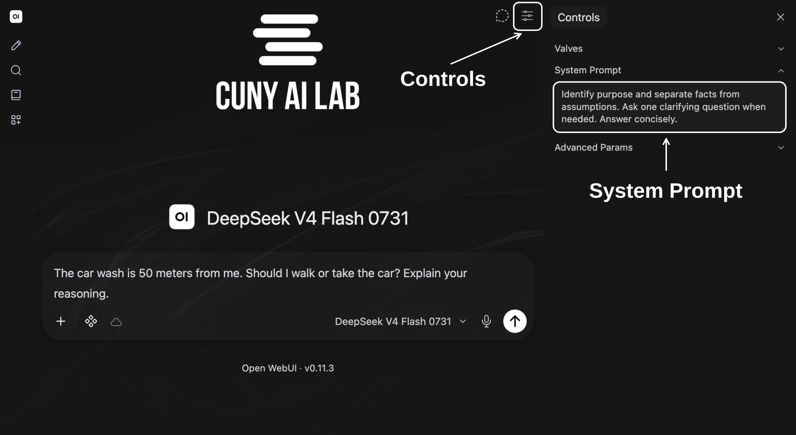
Alt text: CUNY AI Lab logo, DeepSeek V4 Flash 0731, car wash question in message box, and short instructions in System Prompt; white annotations identify Controls button and populated System Prompt field.
Select Controls at top right of chat. Paste these instructions into System Prompt, then close Controls.
Identify purpose and separate facts from assumptions. Ask one clarifying question when needed. Answer concisely.
Regenerate Responses
Debrief Questions
Explore
Clone Models
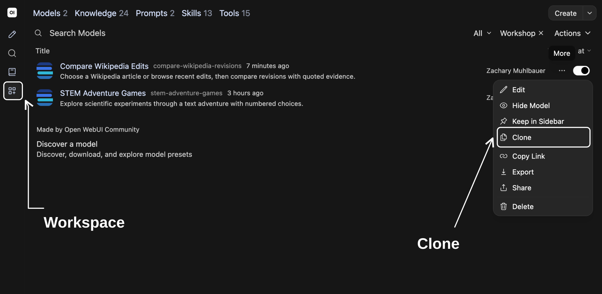
Alt text: Workspace Models showing shared workshop examples; white annotation identifies Clone in More menu.
- Rename your copy.
- Revise one instruction in System Prompt; keep Base Model and other settings unchanged.
- Scroll to bottom and select Save & Create.
- Open your copy in a new chat and repeat your original request.
Compare Configurations
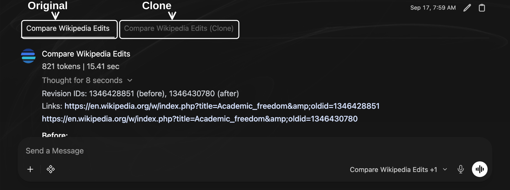
Alt text: Sandbox comparison with tabs for original Compare Wikipedia Edits and its clone; white annotations identify both model names above original response. Message box remains visible.
- What did you change?
- Did your intended revision prove effective?
- How could you imagine testing custom models like this in the future?
Draft System Prompts
Create Models
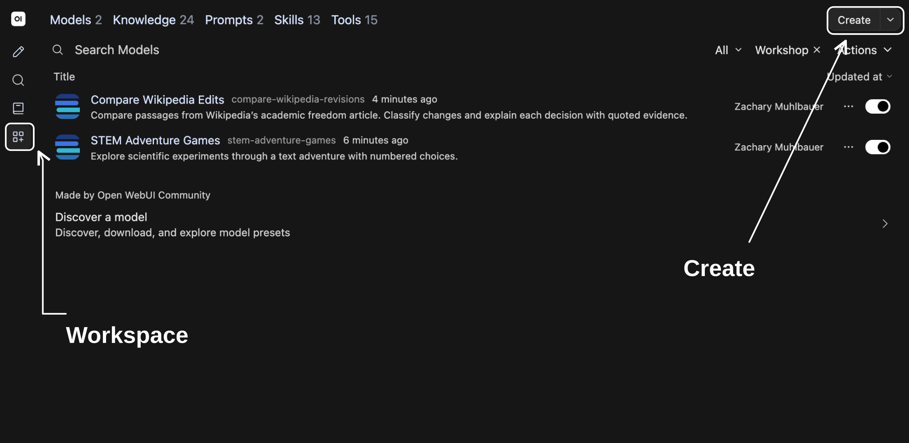
Alt text: Workspace Models filtered to shared workshop examples, with Create button outlined and marked by an arrow.
- Name your configuration.
- Select Base Model and paste your draft into System Prompt.
- Scroll to bottom and select Save & Create.
- Start a new chat with your model and try one request.
Next Workshops
Workshop Resources
Keep your draft and choose source documents for your next workshop.
Curating knowledge collections
Curating knowledge collections
Alt text: CUNY AI Lab
Led by Zach Muhlbauer and Meha Gupta
New Media Lab · Room 7388.01
CUNY Graduate Center
Workshop Roadmap
Workshop Agenda
Retrieval-Augmented Generation
Explore STEM Adventures
Clone Custom Model
Select Workspace in left sidebar, then Models. Search for STEM Adventure Games. Open ⋯ beside it and select Clone.

Alt text: Workspace Models filtered to STEM Adventure Games, with white annotations identifying Workspace in left sidebar and Clone for original model.
Name Your Copy
Give your copy a unique name and model ID. Base model, system prompt, and settings carry over when you clone.
Scroll to bottom and select Save & Create.

Alt text: STEM Adventure Games clone form with white annotations identifying its name, model ID, and base model.
Try Custom Model
Example Sources
Select Workspace → Knowledge and open STEM Wikipedia Experiments to see how an example collection is organized.

Alt text: Expanded Sandbox sidebar showing Workspace, Knowledge tab, and STEM Wikipedia Experiments collection, each outlined.
List of experiments guides adventure options; Scientific method guides decisions; Women in science adds historical context.
Next, choose sources for your adapted version.

Alt text: STEM Wikipedia Experiments containing three original Wikipedia source documents, outlined together.
Choose Purpose
Find Sources
Create Your Collection
Select Workspace → Knowledge → Create. Name your collection and describe what your sources cover.
Keep access Private and select Create Knowledge.

Alt text: Create a knowledge base form with STEM Workshop Sources entered and white outlines identifying name, description, and Create Knowledge.
Add Source Text
Select Add Content → New directory. Name it Wikipedia, select Create, then open Wikipedia.

Alt text: New directory and Wikipedia directory outlined in Sandbox.
Select Add Content → Add text content. Use article title as filename.
Copy and paste several paragraphs or complete sections from each Wikipedia article, including its link.

Alt text: List of experiments editor filled with Wikipedia experiment entries, with source link outlined.
Select Save. Repeat for three Wikipedia articles, keeping excerpts and links in separate files.
Wait for processing, then open each file to check text.

Alt text: Bottom of populated List of experiments editor with Save outlined.
Add Instructions
Select collection name above directory contents to return to its root. Select Add Content → Add text content.
Enter instructions as title; Sandbox adds .txt. Describe how each source should guide play, substituting your page titles and directions. Select Save.

Alt text: Add text content editor titled instructions, with directions for using three STEM Wikipedia sources. Title outlined; Sandbox adds .txt when saved.
In Workspace → Models, open ⋯ → Edit beside your saved copy.
Under Knowledge, replace STEM Wikipedia Experiments with your own collection. Scroll up to System Prompt.

Alt text: Model editor with Select Knowledge and STEM Workshop Sources in its collection picker annotated.
Test Custom Model
Check Citations
In same chat, ask “Which passage supports this scene? Quote it and cite your source.”
Select a citation beside a response. Does its source passage support that response?

Alt text: STEM Adventure Games chat with citation beside a response outlined and labeled. Message box remains visible.
Compare Responses
Revise and Retest
Share Custom Model
Parting Questions
Workshop Resources
Check responses against sources in your collection. Next workshop introduces tools that retrieve Wikipedia content live.
Configuring skills and tools
Configuring skills and tools
Workshop Agenda
Tools & Skills
Review Previous Work
Connect Resources
Enable Tools
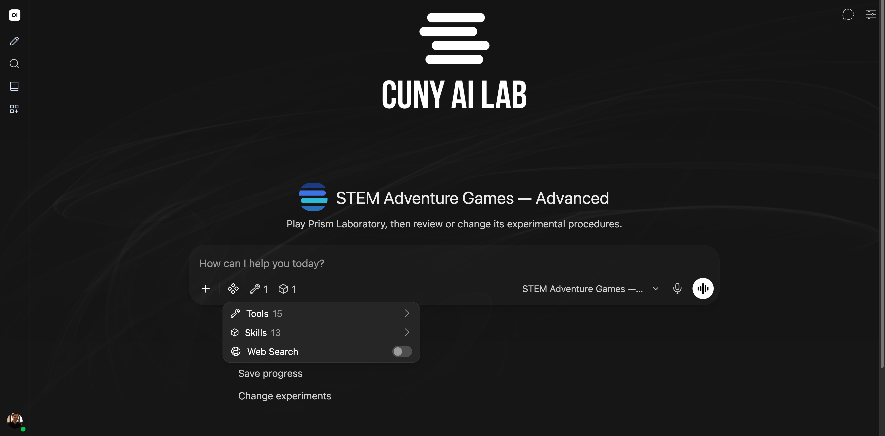
Alt text: STEM Adventure Games — Advanced with CUNY AI Lab logo, message box, and Integrations menu showing Tools and Skills.
Inspect Game Rules
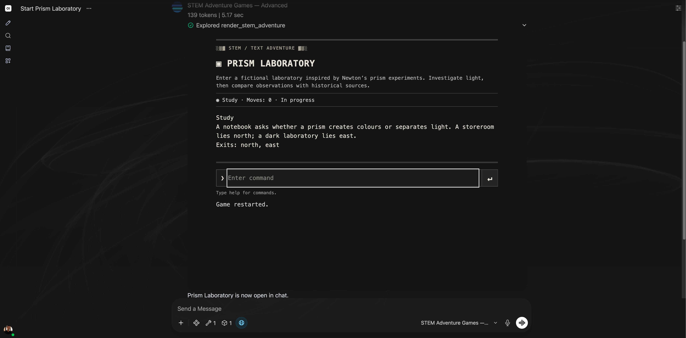
Alt text: Prism Laboratory running in STEM Adventure Games — Advanced, with room description, move status, command box, and chat message box.
Test Game Commands
Discuss Play Records
Choose Procedures
Define Skills
Write Skills
Structure Skills
Define Triggers
Write Procedures
Specify Format
Clone Custom Models
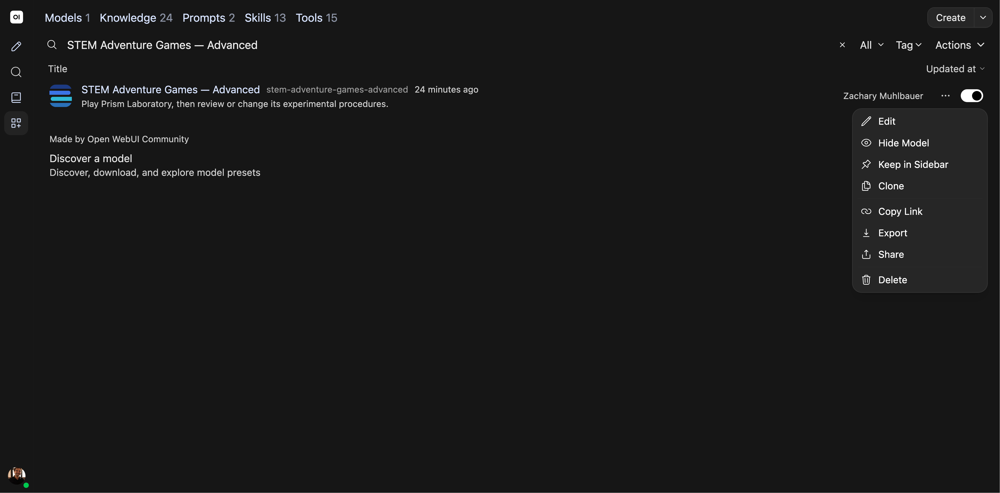
Alt text: Workspace Models filtered to STEM Adventure Games — Advanced, with More menu open and Clone visible.
Save Private Copy
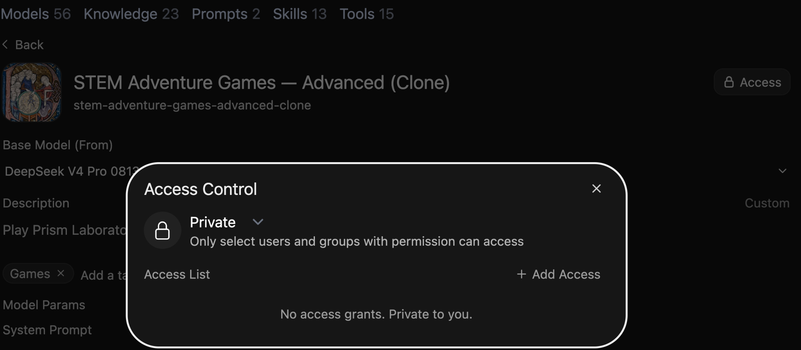
Alt text: Access Control on an unsaved STEM Adventure Games copy shows Private and No access grants. Private to you.
Draft Skills
Create Skills
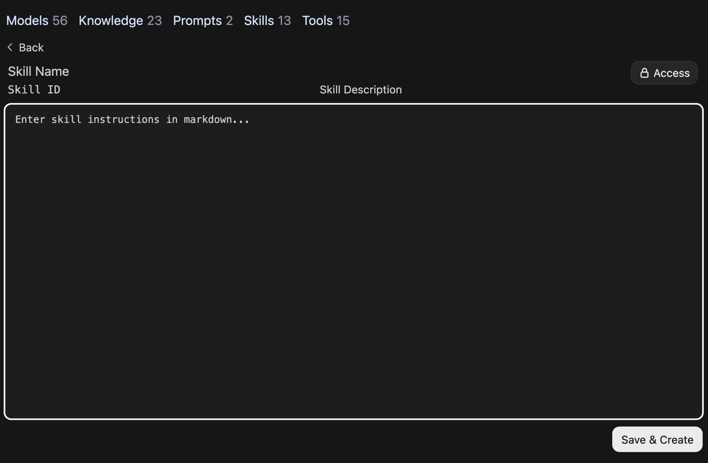
Alt text: Create Skill form in Workspace with empty name, identifier, description, and Instructions fields; outline marks Instructions.